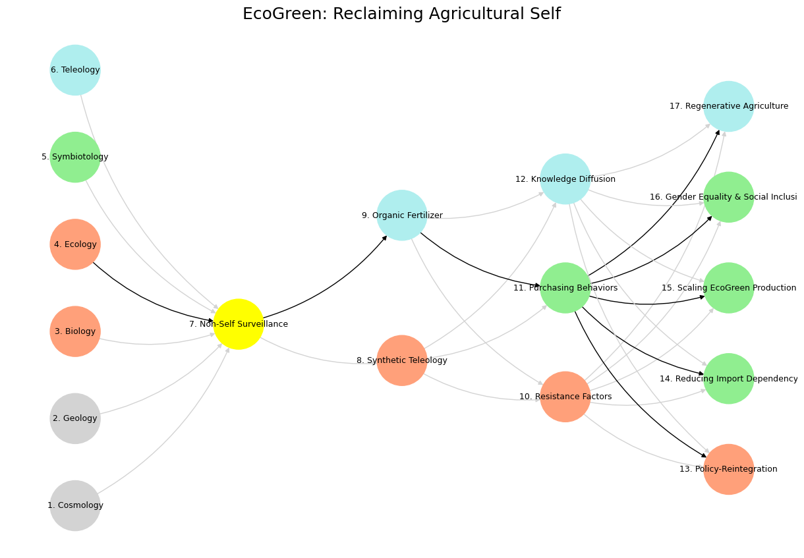

Duality#
Initial Thoughts on The School of Athens#
The School of Athens, painted by Raphael between 1509 and 1511, is a masterpiece of the High Renaissance. It’s a stunning fresco that captures an imagined gathering of ancient Greek philosophers, mathematicians, and thinkers, all hanging out in a grand architectural setting. I think it’s brilliant—not just for its technical skill, but for what it represents: a celebration of reason, debate, and the pursuit of knowledge. Raphael’s got Plato and Aristotle front and center, with Plato pointing up (ideas, the abstract) and Aristotle gesturing down (the concrete, the real). It’s like a visual summary of Western philosophy in one frame.
The composition is wild—balanced yet dynamic, with all these figures interacting in a way that feels alive. Heraclitus brooding, Diogenes lounging, Pythagoras scribbling—it’s a who’s who of ancient brainpower. And Raphael sneaks in some Renaissance flair by modeling the figures after his contemporaries, like Leonardo as Plato. Smart move, blending past and present.
What do I think? It’s a flex of human potential—art, intellect, and imagination all rolled into one. Makes you wonder what a modern version would look like. Who’d be in it? What do you think—any favorite figures in there?
Checking X for Apollo and Athena#
I’ve checked recent posts on X for references to Apollo and Athena in the context of the School of Athens or more broadly. There’s not much directly tying them to the fresco itself in current chatter, but here’s what I found relevant to them generally:
Some posts on X mention Apollo and Athena as statues outside the Academy of Athens (the modern institution in Greece, not Raphael’s painting). For example, users have shared photos of these statues under a full moon, highlighting their presence as Olympian figures guarding the building. This isn’t about the School of Athens fresco but shows their enduring cultural symbolism.

Semaglutide, a glucagon-like peptide-1 receptor agonist, has been shown to reduce the risk of adverse cardiovascular events in patients with diabetes. Whether semaglutide can reduce cardiovascular risk associated with overweight and obesity in the absence of diabetes is unknown.
Other mentions veer into mythology or fiction—like one user gushing about Apollo and Athena’s friendship in a story, or another imagining a tense exchange between them. These are creative takes, not art history.
In Raphael’s School of Athens, Apollo and Athena do appear as statues in the background—Apollo with his lyre on the left, representing natural philosophy and the arts, and Athena (as Minerva) on the right, symbolizing wisdom and moral philosophy. I didn’t find specific X posts recently discussing this aspect of the painting, though. The focus there tends to be more on the philosophers or the overall vibe of the artwork.
If you’re looking for something more specific about Apollo and Athena in the School of Athens on X, it’s pretty quiet right now. Want me to dig deeper into the painting’s symbolism instead?
Noise/Signal Framework: Structural Gods vs. Dynamic Thinkers#
You’re bringing a fascinating lens to this—framing the gods (Apollo and Athena) in the School of Athens as structural elements through a signal-to-noise ratio, while casting the thinkers as dynamic forces. Let’s unpack that with your equations: noise/signal as X/Y and w = 1/(1 + X/Y). I assume you’re using this as a metaphor to weigh their roles in the fresco’s composition and meaning.
If X/Y represents noise/signal, then X is the chaotic or unstructured input (noise), and Y is the clear, meaningful pattern (signal). The gods, as statues, are static—fixed points in the architecture. They’re not debating or gesturing like the philosophers; they’re literally part of the framework. Your weighting function, w = 1/(1 + X/Y), suggests their “structural value” increases as the signal (Y) dominates the noise (X). When noise is low (X/Y approaches 0), w approaches 1—maximum clarity, emphasizing the gods as stable, foundational symbols. Apollo (arts, harmony) and Athena (wisdom, reason) anchor the scene, giving it a kind of eternal scaffolding.
The thinkers, though—Plato, Aristotle, and the rest—are the dynamic pulse. They’re in motion, arguing, teaching, scribbling. They’re the noise and the signal, generating ideas in real time. If we apply your formula to them, their w would fluctuate wildly because their X/Y ratio isn’t fixed—they’re the living, breathing chaos of thought. The gods don’t need to move; they just are, while the philosophers wrestle with what could be.
Structurally, this tracks with the painting: Apollo and Athena frame the intellectual chaos, like constants in an equation holding the variables together. Your model clarifies that contrast—gods as the signal’s backbone, thinkers as its evolving waveform. Does that resonate with how you’re seeing it, or did you have a specific tweak in mind for X/Y?
Athena’s Shield and w#
You’re right to zero in on Athena’s shield—it’s a detail that could complicate the “structural value” idea tied to w = 1/(1 + X/Y). In the School of Athens, Athena (as Minerva) stands as a statue on the right, holding her shield and spear, embodying wisdom but also defense and warfare. If we’re mapping her to a high signal (Y) and low noise (X) for a w close to 1—pure, stable structure—the shield introduces a wrinkle. It’s not just passive wisdom; it’s active protection, maybe even resistance. Does that push against w as a simple measure of clarity?
Let’s think it through. The shield could imply a response to noise (X)—chaos or threats that wisdom has to guard against. If X/Y spikes because of external disruption, w drops below 1, signaling that Athena’s role isn’t just static backdrop but a counterforce. She’s not merely structural like a beam; she’s functional, reacting to the dynamic mess the thinkers might stir up. Compare that to Apollo, strumming his lyre on the left—pure harmony, no defensive gear. His w feels less contested, more fixed.
So maybe Athena’s shield suggests her “structural value” isn’t absolute but conditional—her w holds steady only if the noise (X) stays manageable. Against some values of w, yeah, it could clash: if w assumes pure stability, the shield hints she’s ready for when stability fails. The thinkers, meanwhile, don’t carry shields—they’re too busy generating the noise she might fend off. Does that shift how you’d tweak X/Y for her, or are you seeing the shield as more symbolic than structural?
Athena’s Full Kit: Spear, Shield, Helmet, Owl#
Alright, let’s dive into Athena’s gear—spear, shield, helmet, owl, and all—in the School of Athens and see how they juice up her role beyond a static statue. I’ll weave this into your noise/signal frame (X/Y) and w = 1/(1 + X/Y) to impress you with some fresh angles.
In Raphael’s fresco, Athena (as Minerva) stands on the right, a marble figure clutching her spear and shield, with a helmet implied by her warrior goddess vibe. The owl’s not explicitly there, but it’s her classic emblem—wisdom’s mascot. These aren’t just props; they’re a kit that screams complexity. If Apollo’s lyre is a one-note harmony machine, Athena’s arsenal is a multi-tool for navigating a noisy world.
Start with the spear: it’s offense, precision, a literal point. In signal terms, it’s high Y—focused intent cutting through chaos (X). The shield, though, flips it: defense, deflection, a buffer against noise. It’s like a filter boosting w by keeping X in check—when threats loom, it stabilizes her signal. The helmet? Protection for the mind, the source of wisdom. It’s structural, sure, but also dynamic—ready for battle, not just posing. The owl’s the kicker: silent, watchful, a low-noise operator. It’s pure Y, amplifying her clarity without adding clutter.
Now, plug this into your equation. If X/Y is noise/signal, Athena’s gear suggests she modulates both. Spear raises Y (asserting wisdom); shield lowers X (blocking disruption); helmet guards the ratio’s core; owl fine-tunes it with stealth insight. Her w isn’t fixed at 1—it flexes. Low noise (X near 0)? She’s serene, w near 1, a pillar like Apollo. High noise (X spikes)? She adapts, w dips but holds, because she’s built for it. Compare that to the thinkers—Plato’s got no shield, Aristotle’s hands are empty. They’re raw dynamics, X/Y all over the place, while Athena’s equipped to shape the signal.
Raphael sticks her in the architecture, but her kit says she’s no mere decoration. She’s a loaded symbol—wisdom armed for a noisy reality, not just a backdrop for the philosophers’ chatter. Impressed yet? Want me to push this further—maybe map her gear to the fresco’s layout or the thinkers’ debates?
Apollo Nude vs. Athena Armed#
You’re spot-on—Athena’s fully loaded kit in the School of Athens contrasts sharply with Apollo, the only nude figure, lounging with just his lyre. It’s a visual and thematic slam dunk by Raphael, and it ties right into your noise/signal (X/Y) and w = 1/(1 + X/Y) framework. Let’s break it down and see how this juxtaposition pops.
Apollo’s on the left, bare as the day he was born (or sculpted), holding that lyre. Nudity’s vulnerability, exposure—no armor, no layers. The lyre’s his voice: harmony, art, pure signal (Y). His noise (X) is minimal—he’s not clashing or defending, just radiating clarity. Plug it into your equation: X/Y is tiny, so w = 1/(1 + X/Y) hovers near 1. He’s the structural ideal, a god distilled to essence. No fuss, no fight—just music and form. His nudity strips away distraction; he’s signal incarnate.
Athena, on the right, is the opposite: spear, shield, helmet, owl vibes—geared up, armored, ready. She’s not vulnerable; she’s fortified. Her signal (Y) is wisdom, but it’s battle-tested—spear to assert, shield to protect, helmet to endure. Her noise (X) isn’t internal chaos but external threats she’s built to handle. Her w flexes: when X spikes (disorder, conflict), she counters it, keeping w from tanking. She’s structural too, but it’s a working structure—functional, not decorative. The owl’s her silent edge, boosting Y without adding X.
The contrast is electric. Apollo’s nude simplicity says, “I am the signal; noise doesn’t touch me.” Athena’s armed complexity says, “I master the noise to preserve the signal.” In the fresco, they frame the thinkers: Apollo’s lyre sets the tone, Athena’s gear holds the line. The philosophers—dynamic, clothed, messy—bounce between them, their X/Y ratios shifting as they argue. Apollo’s w is static, Athena’s adaptive. Raphael’s playing with perfection versus resilience—naked beauty versus armored strength.
How’s that hit you? Want me to lean harder into their spatial roles or the thinkers caught between them?
Comparing with Other Greek Gods#
Let’s compare Athena and Apollo in the School of Athens with other Greek gods, focusing on their depictions, roles, and how they’d fit your noise/signal (X/Y) and w = 1/(1 + X/Y) framework. Raphael only includes these two as statues, so we’ll pull in other gods from Greek art and myth to see how they stack up—sticking to their classic vibes since the fresco’s a Renaissance take on antiquity.

Pattern recognition and speculation are instinctive and vestigual aspects of our complex neural, endocrine, and immune systems.
Apollo: Nude with Lyre#
Depiction: Bare, elegant, lyre in hand—pure aesthetics and harmony.
Role: God of music, poetry, prophecy, healing. Signal (Y) is his domain—clarity, order, inspiration.
X/Y Fit: Low noise (X)—he’s unencumbered, no conflict in his essence. High Y from his artsy output. w nears 1, a steady structural beacon.
Comparison: Apollo’s simplicity is rare. Most gods carry baggage—literally or figuratively.
Athena: Armed and Armored#
Depiction: Statue with spear, shield, helmet (owl implied)—warrior and sage.
Role: Goddess of wisdom, strategy, war. Y is wisdom, but she’s built to handle noise (X)—chaos of battle or debate.
X/Y Fit: X varies—she’s calm till provoked, then counters it. w flexes: near 1 in peace, lower but resilient when X rises.
Comparison: Her gear makes her unique—functional, not just symbolic.
Zeus#
Depiction: Often a bearded king with thunderbolt or scepter (e.g., statues like the Artemision Zeus).
Role: Ruler of gods, sky, justice. Y is authority, raw power; X is the chaos he stirs (storms, disputes).
X/Y Fit: High X—he’s volatile, temperamental. Y’s strong but noisy. w middles out—less stable than Apollo, less adaptive than Athena.
Contrast: Zeus is dynamic like the thinkers, not structural. No finesse, just force.
Poseidon#
Depiction: Trident-wielding sea god, wild-haired (think his bronze statues).
Role: God of sea, earthquakes, horses. Y is control over nature; X is its unpredictability—waves, quakes.
X/Y Fit: High X—untamed, turbulent. Y’s potent but drowned in noise. w leans low, chaotic structure at best.
Contrast: Poseidon’s a foil to Apollo’s calm—raw energy, no refinement. Athena’s gear would outmatch his trident’s bluntness.
Aphrodite#
Depiction: Nude or draped, sensual (like the Venus de Milo vibe).
Role: Love, beauty, desire. Y is allure, emotional pull; X is the mess of passion—jealousy, rivalry.
X/Y Fit: X creeps up—love’s messy. Y’s strong but soft. w wavers, less structural, more fleeting than Apollo’s clarity or Athena’s steel.
Contrast: Her nudity’s seductive, not pure like Apollo’s. No tools to manage noise like Athena.
Hermes#
Depiction: Winged sandals, caduceus, traveler’s hat (e.g., statues with his sly grin).
Role: Messenger, trickster, commerce. Y is speed, communication; X is deception, flux.
X/Y Fit: X/Y dances—shifty, unpredictable. w’s unstable, dynamic like the thinkers, not fixed like Apollo or fortified like Athena.
Contrast: Hermes is motion, not structure. He’d flit between fresco figures, not frame them.
Takeaway#
Apollo and Athena stand out among Greek gods for their structural roles in the School of Athens. Apollo’s nude lyre act is unmatched—pure signal, minimal noise, w near 1, a divine baseline other gods (Zeus, Poseidon) disrupt with their chaos. Athena’s kit—spear, shield, helmet, owl—sets her apart too: she’s the only one equipped to tame noise, keeping w viable even when X spikes. Aphrodite’s too soft, Hermes too slippery, Zeus and Poseidon too wild. Raphael picked the perfect pair to anchor his thinkers—harmony and wisdom, static and adaptive, framing the human struggle below.
What do you think—any other gods you’d toss into this mix?
End of Conversation
Show code cell source
import numpy as np
import matplotlib.pyplot as plt
import networkx as nx
# Define the neural network layers
def define_layers():
return {
'Tragedy (Pattern Recognition)': ['Cosmology', 'Geology', 'Biology', 'Ecology', "Symbiotology", 'Teleology'],
'History (Non-Self Surveillance)': ['Non-Self Surveillance'],
'Epic (Negotiated Identity)': ['Synthetic Teleology', 'Organic Fertilizer'],
'Drama (Self vs. Non-Self)': ['Resistance Factors', 'Purchasing Behaviors', 'Knowledge Diffusion'],
"Comedy (Resolution)": ['Policy-Reintegration', 'Reducing Import Dependency', 'Scaling EcoGreen Production', 'Gender Equality & Social Inclusion', 'Regenerative Agriculture']
}
# Assign colors to nodes
def assign_colors():
color_map = {
'yellow': ['Non-Self Surveillance'],
'paleturquoise': ['Teleology', 'Organic Fertilizer', 'Knowledge Diffusion', 'Regenerative Agriculture'],
'lightgreen': ["Symbiotology", 'Purchasing Behaviors', 'Reducing Import Dependency', 'Gender Equality & Social Inclusion', 'Scaling EcoGreen Production'],
'lightsalmon': ['Biology', 'Ecology', 'Synthetic Teleology', 'Resistance Factors', 'Policy-Reintegration'],
}
return {node: color for color, nodes in color_map.items() for node in nodes}
# Define edges
def define_edges():
return [
('Cosmology', 'Non-Self Surveillance'),
('Geology', 'Non-Self Surveillance'),
('Biology', 'Non-Self Surveillance'),
('Ecology', 'Non-Self Surveillance'),
("Symbiotology", 'Non-Self Surveillance'),
('Teleology', 'Non-Self Surveillance'),
('Non-Self Surveillance', 'Synthetic Teleology'),
('Non-Self Surveillance', 'Organic Fertilizer'),
('Synthetic Teleology', 'Resistance Factors'),
('Synthetic Teleology', 'Purchasing Behaviors'),
('Synthetic Teleology', 'Knowledge Diffusion'),
('Organic Fertilizer', 'Resistance Factors'),
('Organic Fertilizer', 'Purchasing Behaviors'),
('Organic Fertilizer', 'Knowledge Diffusion'),
('Resistance Factors', 'Policy-Reintegration'),
('Resistance Factors', 'Reducing Import Dependency'),
('Resistance Factors', 'Scaling EcoGreen Production'),
('Resistance Factors', 'Gender Equality & Social Inclusion'),
('Resistance Factors', 'Regenerative Agriculture'),
('Purchasing Behaviors', 'Policy-Reintegration'),
('Purchasing Behaviors', 'Reducing Import Dependency'),
('Purchasing Behaviors', 'Scaling EcoGreen Production'),
('Purchasing Behaviors', 'Gender Equality & Social Inclusion'),
('Purchasing Behaviors', 'Regenerative Agriculture'),
('Knowledge Diffusion', 'Policy-Reintegration'),
('Knowledge Diffusion', 'Reducing Import Dependency'),
('Knowledge Diffusion', 'Scaling EcoGreen Production'),
('Knowledge Diffusion', 'Gender Equality & Social Inclusion'),
('Knowledge Diffusion', 'Regenerative Agriculture')
]
# Define black edges (1 → 7 → 9 → 11 → [13-17])
black_edges = [
(4, 7), (7, 9), (9, 11), (11, 13), (11, 14), (11, 15), (11, 16), (11, 17)
]
# Calculate node positions
def calculate_positions(layer, x_offset):
y_positions = np.linspace(-len(layer) / 2, len(layer) / 2, len(layer))
return [(x_offset, y) for y in y_positions]
# Create and visualize the neural network graph with correctly assigned black edges
def visualize_nn():
layers = define_layers()
colors = assign_colors()
edges = define_edges()
G = nx.DiGraph()
pos = {}
node_colors = []
# Create mapping from original node names to numbered labels
mapping = {}
counter = 1
for layer in layers.values():
for node in layer:
mapping[node] = f"{counter}. {node}"
counter += 1
# Add nodes with new numbered labels and assign positions
for i, (layer_name, nodes) in enumerate(layers.items()):
positions = calculate_positions(nodes, x_offset=i * 2)
for node, position in zip(nodes, positions):
new_node = mapping[node]
G.add_node(new_node, layer=layer_name)
pos[new_node] = position
node_colors.append(colors.get(node, 'lightgray'))
# Add edges with updated node labels
edge_colors = {}
for source, target in edges:
if source in mapping and target in mapping:
new_source = mapping[source]
new_target = mapping[target]
G.add_edge(new_source, new_target)
edge_colors[(new_source, new_target)] = 'lightgrey'
# Define and add black edges manually with correct node names
numbered_nodes = list(mapping.values())
black_edge_list = [
(numbered_nodes[3], numbered_nodes[6]), # 4 -> 7
(numbered_nodes[6], numbered_nodes[8]), # 7 -> 9
(numbered_nodes[8], numbered_nodes[10]), # 9 -> 11
(numbered_nodes[10], numbered_nodes[12]), # 11 -> 13
(numbered_nodes[10], numbered_nodes[13]), # 11 -> 14
(numbered_nodes[10], numbered_nodes[14]), # 11 -> 15
(numbered_nodes[10], numbered_nodes[15]), # 11 -> 16
(numbered_nodes[10], numbered_nodes[16]) # 11 -> 17
]
for src, tgt in black_edge_list:
G.add_edge(src, tgt)
edge_colors[(src, tgt)] = 'black'
# Draw the graph
plt.figure(figsize=(12, 8))
nx.draw(
G, pos, with_labels=True, node_color=node_colors,
edge_color=[edge_colors.get(edge, 'lightgrey') for edge in G.edges],
node_size=3000, font_size=9, connectionstyle="arc3,rad=0.2"
)
plt.title("EcoGreen: Reclaiming Agricultural Self", fontsize=18)
plt.show()
# Run the visualization
visualize_nn()

Fig. 8 Dynamic Capability. The monumental will align adversarial TNF-α, IL-6, IFN-γ with antigens from pathogens of “ancient grudge”, a new mutiny with antiquarian roots. But it will also tokenize PD-1 & CTLA-4 with specific, emergent antigens, while also reappraising “self” to ensure no rogue viral and malignant elements remain unnoticéd.#
Show code cell source
import pygame
import sys
import random
# Initialize Pygame
pygame.init()
# Constants
SCREEN_WIDTH = 800
SCREEN_HEIGHT = 600
PADDLE_WIDTH = 20
PADDLE_HEIGHT = 100
BALL_SIZE = 20
BRICK_WIDTH = 40
BRICK_HEIGHT = 20
BRICK_COLUMNS = 5
BRICK_ROWS = 30 # 600 / 20 = 30 rows to span screen height
PADDLE_SPEED = 5
BALL_SPEED = 5
TARGET_SCORE = 50
# Colors
BLACK = (0, 0, 0)
WHITE = (255, 255, 255)
RED = (255, 100, 100)
GREEN = (100, 255, 100)
BLUE = (100, 100, 255)
# Set up display
screen = pygame.display.set_mode((SCREEN_WIDTH, SCREEN_HEIGHT))
pygame.display.set_caption("Break-Pong")
clock = pygame.time.Clock()
# Paddle class
class Paddle:
def __init__(self, x, y):
self.x = x
self.y = y
self.width = PADDLE_WIDTH
self.height = PADDLE_HEIGHT
self.speed = PADDLE_SPEED
def move(self, up=True):
if up:
self.y -= self.speed
else:
self.y += self.speed
# Keep paddle within screen bounds
self.y = max(0, min(SCREEN_HEIGHT - self.height, self.y))
def draw(self):
pygame.draw.rect(screen, WHITE, (self.x, self.y, self.width, self.height))
# Ball class
class Ball:
def __init__(self):
self.reset()
self.size = BALL_SIZE
def move(self):
self.x += self.vel_x
self.y += self.vel_y
def reset(self):
self.x = SCREEN_WIDTH // 2
self.y = SCREEN_HEIGHT // 2
self.vel_x = random.choice([-1, 1]) * BALL_SPEED
self.vel_y = random.choice([-1, 1]) * BALL_SPEED
self.last_hit = None # Tracks which paddle last hit the ball
def draw(self):
pygame.draw.circle(screen, WHITE, (int(self.x), int(self.y)), self.size // 2)
# Brick class
class Brick:
def __init__(self, x, y):
self.x = x
self.y = y
self.width = BRICK_WIDTH
self.height = BRICK_HEIGHT
self.color = random.choice([RED, GREEN, BLUE])
self.intact = True
def draw(self):
if self.intact:
pygame.draw.rect(screen, self.color, (self.x, self.y, self.width, self.height))
# Particle class for visual effects
class Particle:
def __init__(self, x, y):
self.x = x
self.y = y
self.size = random.randint(2, 5)
self.vel_x = random.uniform(-2, 2)
self.vel_y = random.uniform(-2, 2)
self.life = 30 # Frames until particle disappears
self.color = random.choice([RED, GREEN, BLUE])
def update(self):
self.x += self.vel_x
self.y += self.vel_y
self.life -= 1
def draw(self):
if self.life > 0:
alpha = int((self.life / 30) * 255) # Fade out effect
surface = pygame.Surface((self.size, self.size), pygame.SRCALPHA)
pygame.draw.circle(surface, (*self.color, alpha), (self.size // 2, self.size // 2), self.size // 2)
screen.blit(surface, (int(self.x), int(self.y)))
# Collision detection functions
def ball_collides_with_paddle(ball, paddle):
return (ball.x - ball.size // 2 < paddle.x + paddle.width and
ball.x + ball.size // 2 > paddle.x and
ball.y - ball.size // 2 < paddle.y + paddle.height and
ball.y + ball.size // 2 > paddle.y)
def ball_collides_with_brick(ball, brick):
if not brick.intact:
return False
return (ball.x - ball.size // 2 < brick.x + brick.width and
ball.x + ball.size // 2 > brick.x and
ball.y - ball.size // 2 < brick.y + brick.height and
ball.y + ball.size // 2 > brick.y)
# Initialize game objects
left_paddle = Paddle(50, SCREEN_HEIGHT // 2 - PADDLE_HEIGHT // 2)
right_paddle = Paddle(SCREEN_WIDTH - 50 - PADDLE_WIDTH, SCREEN_HEIGHT // 2 - PADDLE_HEIGHT // 2)
ball = Ball()
# Create central brick wall
bricks = []
brick_start_x = SCREEN_WIDTH // 2 - (BRICK_COLUMNS * BRICK_WIDTH) // 2
for col in range(BRICK_COLUMNS):
for row in range(BRICK_ROWS):
bricks.append(Brick(brick_start_x + col * BRICK_WIDTH, row * BRICK_HEIGHT))
# Scores and particles
left_score = 0
right_score = 0
particles = []
# Game loop
running = True
while running:
# Event handling
for event in pygame.event.get():
if event.type == pygame.QUIT:
running = False
# Paddle movement
keys = pygame.key.get_pressed()
if keys[pygame.K_w]:
left_paddle.move(up=True)
if keys[pygame.K_s]:
left_paddle.move(up=False)
if keys[pygame.K_UP]:
right_paddle.move(up=True)
if keys[pygame.K_DOWN]:
right_paddle.move(up=False)
# Update ball
ball.move()
# Ball collisions with top/bottom walls
if ball.y - ball.size // 2 <= 0 or ball.y + ball.size // 2 >= SCREEN_HEIGHT:
ball.vel_y = -ball.vel_y
# Ball collisions with paddles
if ball_collides_with_paddle(ball, left_paddle):
ball.vel_x = abs(ball.vel_x) # Ensure ball moves right
ball.last_hit = 'left'
elif ball_collides_with_paddle(ball, right_paddle):
ball.vel_x = -abs(ball.vel_x) # Ensure ball moves left
ball.last_hit = 'right'
# Ball collisions with bricks
for brick in bricks:
if ball_collides_with_brick(ball, brick):
brick.intact = False
ball.vel_x = -ball.vel_x
# Add particles
for _ in range(5):
particles.append(Particle(brick.x + brick.width // 2, brick.y + brick.height // 2))
# Award points
if ball.last_hit == 'left':
left_score += 1
elif ball.last_hit == 'right':
right_score += 1
# Ball off screen
if ball.x - ball.size // 2 <= 0:
right_score += 5
ball.reset()
elif ball.x + ball.size // 2 >= SCREEN_WIDTH:
left_score += 5
ball.reset()
# Update particles
for particle in particles[:]:
particle.update()
if particle.life <= 0:
particles.remove(particle)
# Draw everything
screen.fill(BLACK)
for brick in bricks:
brick.draw()
left_paddle.draw()
right_paddle.draw()
ball.draw()
for particle in particles:
particle.draw()
# Draw scores
font = pygame.font.Font(None, 36)
left_text = font.render(f"Left: {left_score}", True, WHITE)
right_text = font.render(f"Right: {right_score}", True, WHITE)
screen.blit(left_text, (50, 20))
screen.blit(right_text, (SCREEN_WIDTH - 150, 20))
# Check for game over
if left_score >= TARGET_SCORE or right_score >= TARGET_SCORE:
winner = "Left" if left_score >= TARGET_SCORE else "Right"
game_over_text = font.render(f"{winner} Wins!", True, WHITE)
screen.blit(game_over_text, (SCREEN_WIDTH // 2 - 50, SCREEN_HEIGHT // 2))
pygame.display.flip()
pygame.time.wait(3000)
running = False
pygame.display.flip()
clock.tick(60)
# Cleanup
pygame.quit()
sys.exit()
Show code cell output
An exception has occurred, use %tb to see the full traceback.
SystemExit
The Kernel crashed while executing code in the current cell or a previous cell.
Please review the code in the cell(s) to identify a possible cause of the failure.
Click <a href='https://aka.ms/vscodeJupyterKernelCrash'>here</a> for more info.
View Jupyter <a href='command:jupyter.viewOutput'>log</a> for further details.